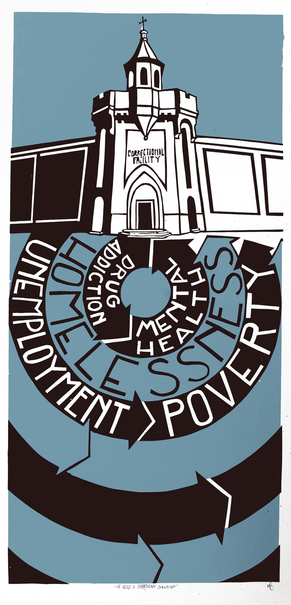
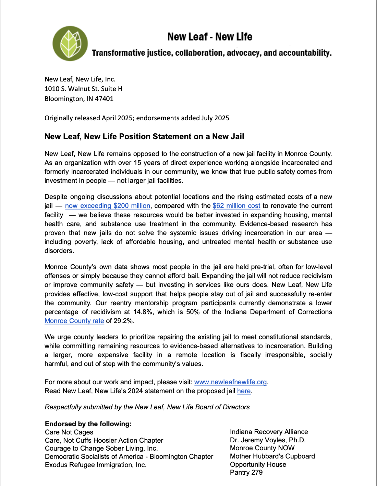
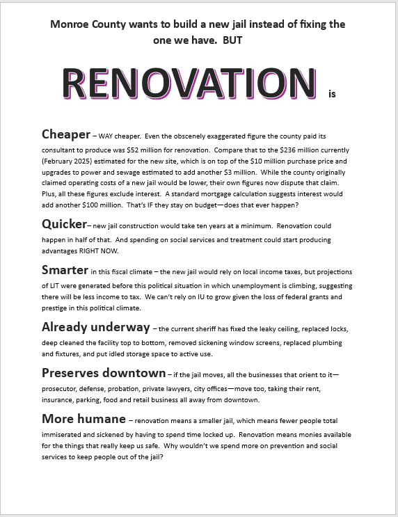

NO NEW JAIL COMPLEX!
Monroe County Government is planning the construction of a new "Justice Campus" costing over $330 million!
Over several phases, the county government seeks to construct a new larger jail with 500 beds and plans for easy expansion. The courts, clerks, Sheriff, public defenders, and Prosecutor will also be relocated to the campus in a later phase.
The new proposed "North Park" location will be along State Road 46 near Arlington road adjacent to a flood plain and former superfund site. While as of 2019 the site is no longer a superfund, the parks department still recommends to any employees who will work in the nearby park planned on top of the former superfund site that they avoid becoming pregnant.
There is no existing public transit route to this location and it will be time consuming and either illegal or highly dangerous to walk to and from the campus, meaning for those without reliable private cars, a significant barrier will be added to things like attending court, reporting to a Probation Officer, or accessing basic services within the community after being released from the proposed new jail.
Over several phases, the county government seeks to construct a new larger jail with 500 beds and plans for easy expansion. The courts, clerks, Sheriff, public defenders, and Prosecutor will also be relocated to the campus in a later phase.
The new proposed "North Park" location will be along State Road 46 near Arlington road adjacent to a flood plain and former superfund site. While as of 2019 the site is no longer a superfund, the parks department still recommends to any employees who will work in the nearby park planned on top of the former superfund site that they avoid becoming pregnant.
There is no existing public transit route to this location and it will be time consuming and either illegal or highly dangerous to walk to and from the campus, meaning for those without reliable private cars, a significant barrier will be added to things like attending court, reporting to a Probation Officer, or accessing basic services within the community after being released from the proposed new jail.

Our Proposal

Our Proposal

Contact
611 W 12 Street
Bloomington, Indiana 47404
Instagram: @carenotcages.moco